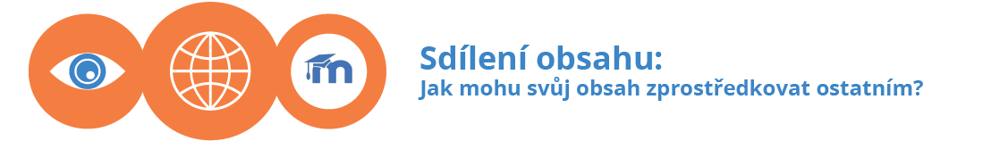

Návody pro tvůrce kurzů: Medial¶
Vítejte v nápovědě pro Medial, knihovnu médií provozovanou a spravovanou Filozofickou fakultou MU. Naleznete jej na adrese medial.phil.muni.cz. Na těchto stránkách se dozvíte, co přesně Medial je, co umožňuje a jak s ním pracovat.
Medial si můžete představit jako fakultní verzi portálu Youtube zřízenou pro potřeby Filozofcké fakulty MU. Medial slouží jako archiv audio- a videonahrávek souvisejících s činností jednotlivých fakultních pracovišť, zároveň funguje jako součást e-learningového prostředí FF MU (ELF) a je díky tomu úzce provázán se systémem pro správu e-kurzů Moodle a technikou v nově vybavených učebnách.
- Co je to Medial. Základní představení knihovny médií a jejího účelu.
- Jak lze Medial využívat. Stručný přehled možností využití Medialu a jeho propojení s ostatními systémy.
- Základní orientace. Návod pro přihlášení do Medialu, základní orientaci v něm a možnosti vyhledávání konkrétních nahrávek.
- Organizace obsahu. Návod popisuje systém kategorií a tagů sloužící k organizaci obsahu Medialu.
- Propojení s Moodlem. Základní popis propojení Medialu s e-kurzy v Moodlu.
Do Medialu můžete vložit již existující nahrávky nebo vytvořit zcela nové, a to jak z webu Medialu, tak z e-kurzů v Moodlu. Celý systém je navíc propojený s nahrávací technikou v nově vybavených učebnách: záznamy, které zde pořídíte, budou automaticky odeslány a uloženy do Medialu.
- Jak nahrát soubor z počítače. Návod pro vložení souboru z počítače a vyplnění doplňujících informací o nahrávce.
- Jak pořídit nahrávku pomocí webkamery. Návod pro vytvoření vlastního audio- či videozáznamu v prostředí Medialu.
- Jak nahrát obsah prostřednictvím Moodlu. Popisuje možnosti vložení nového obsahu do Medialu přímo z e-kurzů v Moodlu.
Se svými nahrávkami můžete poměrně volně manipulovat: přejmenovávat je, přesouvat mezi kategoriemi, nahradit je za jinou nahrávku nebo je z knihovny odstranit. Dodatečně můžete také upravit informace o nahrávce nebo k ní nastavit kapitoly.
- Kde najdu všechna svoje videa. Návod pro zpřístupnění soupisu všech nahrávek uživatele a pro základní úpravy a mazání videí.
- Jak můžu dodatečně upravit metadata. Návod pro nahrazení souboru s nahrávkou, dodatečnou úpravu doplňujících informací o ní a vytváření kapitol.

Své nahrávky můžete sdílet přímo v knihovně médií i mimo ni. V rámci webového portálu Medialu můžete rozhodnout, kdo všechno Vaši nahrávku uvidí, mimo Medial lze nahrávku zprostředkovat pomocí odkazu, stáhnout si ji nebo ji umístit na vlastní webové stránky. V neposlední řadě můžete nahrávky rychle a pohodlně vkládat do svých kurzů v Moodlu.
- Kdo může vidět moje videa. Vysvětlení, jak lze ovlivnit viditelnost nahrávek v rámci Medialu.
- Jak můžu svá videa šířit. Popis možností šíření videí mimo Medial, včetně rychlého vkládání videí do e-kurzů v Moodlu.
Medial je propojený technikou v nově vybavených učebnách FF. V těchto učebnách můžete pomocí zařízení pro automatizovaný záznam jednoduše nahrávat své přednášky, které se následně objeví ve Vaší kategorii v Medialu. Prostřednictvím Medialu můžete přednášky také živě vysílat na internetu.
- Jak pracovat s tlačítkovými ovládacími panely. Návod pro nahrávání přednášek a ovládání techniky v učebnách s tlačítkovými panely.
- Jak pracovat s dotykovými ovládacími panely. Návod pro nahrávání přednášek a ovládání techniky v učebnách s dotykovými panely.
- Jak používat mikrofony. Základní informace k mikrofonům dostupným v učebnách v Carle.
- Jak zajistit živý přenos z učeben. Popisuje, jak funguje živý stream z učeben a co je třeba udělat pro jeho zajištění.
- Koho kontaktovat v případě potíží. Podrobnější rozpis kontaktů, na které se můžete obracet, pokud potřebujete pomoci s technikou v učebnách.